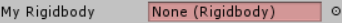

Unity has several attributes which can be used to easily customise the appearance of the Inspector without needing to write a custom Inspector class: Header, HideInInspector, Multiline, Range, SerializeField, Space, TextArea, Tooltip. The InspectorGadgets namespace contains some additional attributes to allow for even greater customisation (see the links on the right for the full list).
The following features are only available in Inspector Gadgets Pro.
Color
The [Color] attribute simply changes the color of a field, allowing you to highlight it or group multiple fields together visually.
[InspectorGadgets.Color(1, 0.5f, 0.5f)]
public string coloredField = "I'm Red";

Euler
The [Euler] attribute displays the Euler angles of a Quaternion field so they can be more easily edited by people without an intimate understanding of Quaternions (which is everyone).
[InspectorGadgets.Euler]
public Quaternion quaternionField;
Labelled Collection
The [LabelledCollection] attribute provides labels for the elements of a collection field to use instead of just calling them Element X.
// Manually specify labels.
[InspectorGadgets.LabelledCollection("Up", "Down", "Left", "Right")]
public Vector3[] directions;
// Use names from an Enum.
[InspectorGadgets.LabelledCollection(typeof(HumanBodyBones))]
public Transform[] bones;
// Use names from another field.
public string[] actions;
[InspectorGadgets.LabelledCollection("actions")]
public KeyCode[] keys;
Readonly
The [Readonly] attribute causes a field to be greyed out in the Inspector so the user can't edit it.
[InspectorGadgets.Readonly]
public string readonlyField = "Can't touch this";
Required
The [Required] attribute causes a field to be highlighted red in the Inspector if it hasn’t been given a value so the user knows that they should assign something to it. This attribute is very useful on Object reference fields, but can be used on any type such as int or string.
[InspectorGadgets.Required]
public Rigidbody myRigidbody;

Scene
The [Scene] attribute can be placed on an int or string field to have it drawn as a dropdown box for selecting scene indices or names from the build settings.
[InspectorGadgets.Scene]
public int nextLevel;
Show Preview
The [ShowPreview] attribute can be placed on an Object reference field to show a preview image of the referenced object.
[InspectorGadgets.ShowPreview]
public GameObject prefab;
[InspectorGadgets.ShowPreview]
public Texture texture;
Toolbar
The [Toolbar] attribute replaces the attributed field with a set of buttons to let you easily select from among a specific set of options without opening a dropdown menu. It can be used on various different field types:
bool- Allows you to specify user friendly labels such as yes/no or on/off.Enum- Automatically uses the enum's values as the button labels. If the enum has a[System.Flags]attribute the buttons will act as toggles to be activated and deactivated in any combination.string- Allows you to specify your own set of options for the field.- If the toolbar has too many values to fit into the available space, you can scroll across using your scroll wheel while the mouse cursor is pointing at it or you can drag the field label (just like a number field).
| Normal | Toolbar |
|---|---|
|
|
Unique Collection
The [UniqueCollection] attribute causes the elements of a collection to be highlighted in red if they are duplicates of other elements.
[InspectorGadgets.UniqueCollection]
public int[] dictionaryKeys;
Validator Attributes
These attributes enforce specific rules on the attributed fields:
[MinValue]Sets a minimum which the value of a numeric field cannot fall below.[MaxValue]Sets a maximum which the value of a numeric field cannot rise above.[ClampValue]Sets both a minimum and maximum for the value of a numeric field.[HasComponent]Placed on aGameObjectfield to deny any references to objects which don't have a specific component type attached.